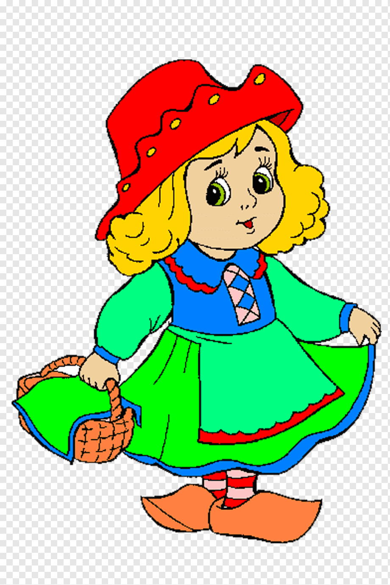

Ormanın Derinliklerinde
Bir zamanlar, büyülü bir ormanın derinliklerinde küçük bir peri yaşardı. Orman, her mevsim farklı bir renge bürünürdü ve perinin en sevdiği zaman ilkbahardı...

Bir zamanlar, büyülü bir ormanın derinliklerinde küçük bir peri yaşardı. Orman, her mevsim farklı bir renge bürünürdü ve perinin en sevdiği zaman ilkbahardı...
Perinin ormandaki dostları arasında kocaman bir ayı, hızlı bir tavşan ve akıllı bir baykuş vardı. Her gün birlikte maceralar yaşarlar, ormanın gizemlerini keşfederlerdi...

Bir gün, peri ve arkadaşları eski bir harita buldular. Haritada, ormanın derinliklerinde gizli bir hazine olduğu yazıyordu. Heyecanla maceraya atıldılar...

Uzun bir yolculuktan sonra, peri ve arkadaşları hazineye ulaştılar. Ancak hazine, altınlar değil, dostluğun ve sevginin en değerli hazineler olduğunu gösteren bir mesajdı...